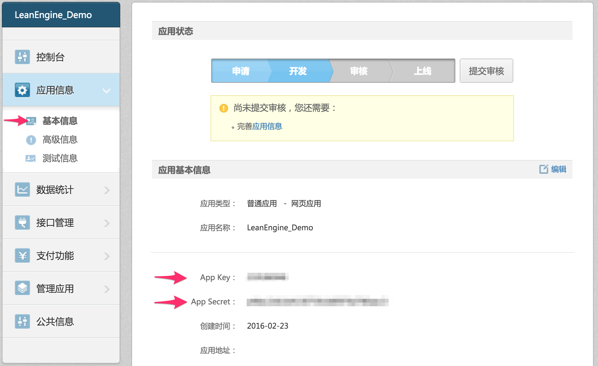
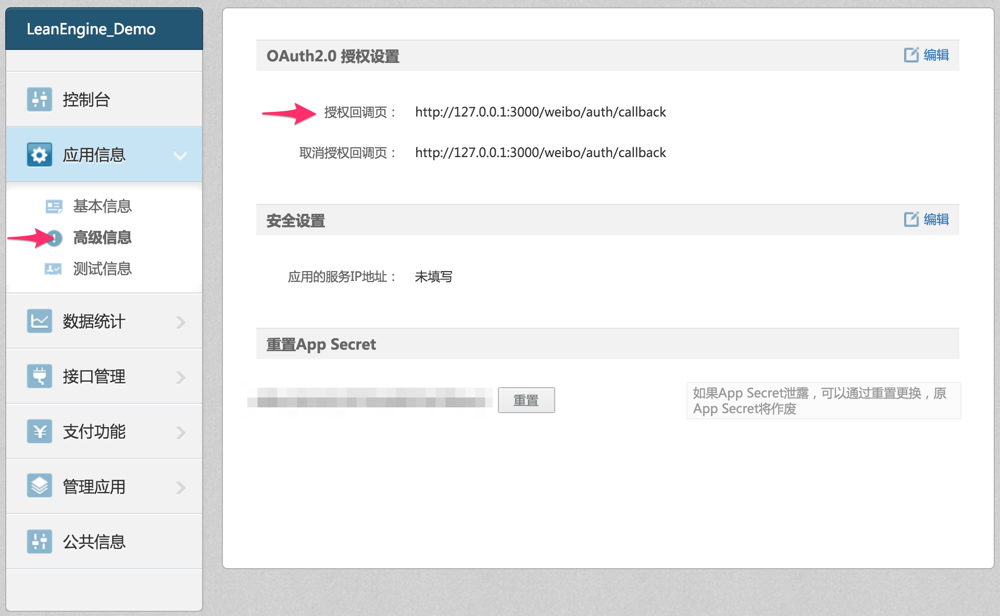
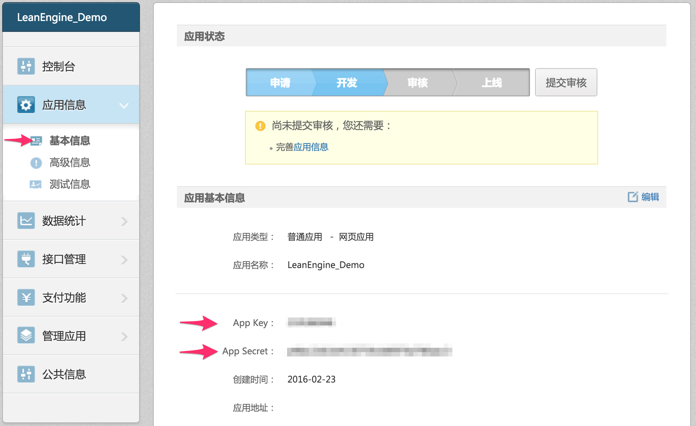
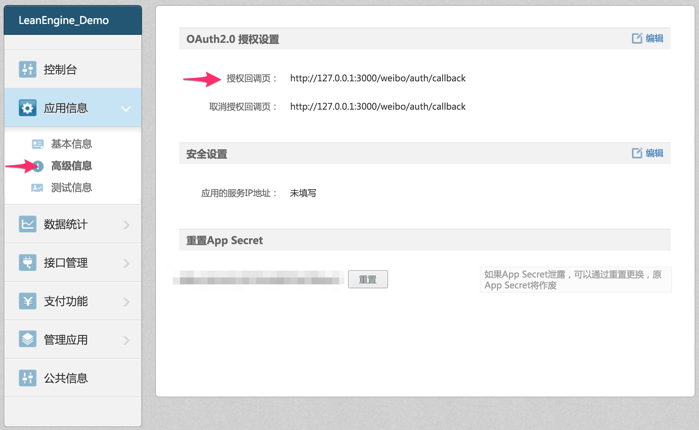

阅读本文前，请确保您已准确理解了 OAuth 2 以及 微博登录。
本文的主要目的是指导开发者使用 LeanEngine 作为微博 OAuth 授权验证回调服务器，因此我们设定了如下场景：实现微博登录，然后发一条微博。
这一部分请参考 微博开放平台的文档。
登录到 微博 · 开放平台 > 我的应用，选择一个应用，再选择 应用信息 > 基本信息，即可看到 App Key 和 App Secret。

登录到 微博 · 开放平台 > 我的应用，选择一个应用，再选择 应用信息 > 高级信息 > OAuth2.0 授权设置 > 授权回调页、取消授权回调页；点击 编辑，输入相应的回调链接，如 http://127.0.0.1:3000/weibo/auth/callback。
http://127.0.0.1:3000/weibo/auth/callback

在 LeanCloud 控制台 中创建一个应用，暂且叫做「Weibo_OAuth」 在本地创建一个项目文件夹（比如 /usr/leancloud/weibo_oauth/），并执行以下命令行：：
LeanCloud 控制台
/usr/leancloud/weibo_oauth/
cd /usr/leancloud/weibo_oauth/ avoscloud new
然后进入 LeanCloud 控制台，选择刚才创建的应用，
再选择 设置 > 应用 Key，
找到 App ID 以及 Master Key 并复制。
回到命令行工具，它会要求你输入 App ID 以及 Master Key，输入完成之后，可以看见在 /usr/leancloud/weibo_oauth/ 下就创建了一个 LeanEngine 默认的模板项目，打开 app.js 文件，然后请打开如下 GitHub 上托管的完整的微博 OAuth 授权验证回调服务器项目：使用 LeanEngine 托管国内 OAuth 回调服务器，打开此项目下的 app.js 文件（建议克隆到本地）。
app.js
打开 package.json 文件，替换成如下内容：
package.json
{ "name": "LeanEngine-OAuth-Sample", "version": "1.0.0", "description": "LeanEngine Weibo OAuth 2 sample project.", "main": "server.js", "scripts": { "start": "node server.js" }, "keywords": [ "node", "LeanCloud", "LeanEngine", "express", "weibo", "OAuth" ], "license": "MIT", "dependencies": { "body-parser": "1.12.3", "cookie-parser": "^1.3.5", "ejs": "2.3.1", "express": "4.12.3", "leanengine": "^0.4.0", "passport": "^0.3.2", "passport-weibo": "^0.1.2", "request": "^2.69.0" } }
参照 weibo.js 的代码，建议直接复制拷贝所有内容，全部覆盖本地的 /usr/leancloud/weibo_oauth/routes/weibo.js 的内容；如果该文件不存在就直接复制到对应的目录下，然后找到关键的配置项修改。
/usr/leancloud/weibo_oauth/routes/weibo.js
var router = require('express').Router(), passport = require('passport'), WeiboStrategy = require('passport-weibo').Strategy, request = require('request'); var WEIBO_CLIENT_ID = "在这里填写微博应用的 App ID"; var WEIBO_CLIENT_SECRET = "在这里填写微博应用的 App Secret"; var ACCESSTOKEN = ""; // passport 组件所需要实现的接口 passport.serializeUser(function(user, done) { done(null, user); }); passport.deserializeUser(function(obj, done) { done(null, obj); }); // passport 的 WeiboStrategy 所必须设置的参数 passport.use(new WeiboStrategy({ clientID: WEIBO_CLIENT_ID, // App ID clientSecret: WEIBO_CLIENT_SECRET, // App Secret callbackURL: "http://127.0.0.1:3000/weibo/auth/callback" // 回调地址，此处是为了本地调试 }, function(accessToken, refreshToken, profile, done) { process.nextTick(function() { // 此处在服务端存储 ACCESSTOKEN 是为了后续发送微博所需要的必要参数 // 实际生产项目中，是需要持久化存储这个 ACCESSTOKEN 到数据库里面 ACCESSTOKEN = accessToken; console.log("accessToken:" + accessToken); return done(null, profile); }); } )); // 发起授权认证请求，用户主动发起 router.get('/auth/', passport.authenticate('weibo'), function(req, res) { // The request will be redirected to Weibo for authentication, so this // function will not be called. }); // 用户授权完整之后回调到这个路由 router.get('/auth/callback', passport.authenticate('weibo', { failureRedirect: '/' }), function(req, res) { // 如果授权了你的应用就会走到这个路由 // 在当前实例下，我们设置用户授权成功之后，我们跳转到 share 路由下 res.redirect('/weibo/share'); }); router.get('/share', function(req, res) { // 跳转到这里之后，我们让用户跳转到发送微博的页面 res.render('post', {}); //此处只是为了展现 post.ejs 页面 }); // 这里调用了微博发送的接口，发送一条全新的微博 router.post('/post', function(req, res) { console.log(req.body.status); request.post({ url: 'https://api.weibo.com/2/statuses/update.json', form: { access_token: ACCESSTOKEN, status: req.body.status } }, function(err, httpResponse, body) { if (err) { } else { console.log(httpResponse.body); res.send("分享成功！"); } }) }); module.exports = router;
在根目录下的 app.js需要配置的是两行代码，如下：
'use strict'; ... var weibo = require('./routes/weibo'); // 这一段必须拷贝到当前项目中，它是定义了一个路由集合 var passport = require('passport');// 引用 passport 组件 ...
启用 passport 组件：
passport
app.use(passport.initialize()); app.use(passport.session());
然后在后面引用定义过的这个路由集合：
// 可以将一类的路由单独保存在一个文件中 app.use('/weibo', weibo);
复制如下内容到覆盖 index.ejs 里面的内容：
index.ejs
<!DOCTYPE HTML> <html> <head> <title>LeanEngine 搭建 OAuth 回调服务器示例</title> <link href="//cdn.bootcss.com/flat-ui/2.2.2/css/vendor/bootstrap.min.css" rel="stylesheet"> <link href="//cdn.bootcss.com/flat-ui/2.2.2/css/flat-ui.min.css" rel="stylesheet"> </head> <body> <div class="container"> <form class="form-signin"> <h2 class="form-signin-heading">微博登录示例</h2> <a class="btn btn-primary btn-large btn-block" href="/weibo/auth">微博登录</a> </form> </div> <!-- /container --> </html>
在根目录下执行：
npm install
如果无法科学上网，请配置 cnpm。然后执行：
avoscloud
随后打开 http://localhost:3000 会看到：
这样就可以在本地完成 授权 > 回调 > 发微博 的流程。
回到 LeanCloud 控制台，选择刚创建的应用，再选择 存储 > 云引擎 > 设置 > Web 主机域名，在这里为该应用设置二级域名。
设置域名为：weibotest.leanapp.cn，然后回到项目目录下，执行如下命令行：
weibotest.leanapp.cn
avoscloud deploy
这只是部署到预备环境，并没有真正发布到外网的线上，如果 deploy 成功之后，可以通过 http://stg-weibotest.leanapp.cn 来访问。若要正式对外发布到 http://weibotest.leanapp.cn，则执行如下命令行：
http://stg-weibotest.leanapp.cn
http://weibotest.leanapp.cn
avoscloud publish
因为是要回调到外网地址，因此需要回到微博开放平台的后台设置页面修改回调地址：
http://weibotest.leanapp.cn/weibo/auth/callback
而 weibo.js 中的配置项也需要对应的修改：
weibo.js
passport.use(new WeiboStrategy({ clientID: WEIBO_CLIENT_ID, // App ID clientSecret: WEIBO_CLIENT_SECRET, // App Secret callbackURL: "http://weibotest.leanapp.cn/weibo/auth/callback" //*此处也需要进行同样的设置* }, function(accessToken, refreshToken, profile, done) { process.nextTick(function() { // 此处在服务端存储 ACCESSTOKEN 是为了后续发送微博所需要的必要参数 // 实际生产项目中，是需要持久化存储这个 ACCESSTOKEN 到数据库里面 ACCESSTOKEN = accessToken; console.log("accessToken:" + accessToken); return done(null, profile); }); } ));
打开所设置的二级域名的首页（本例所用的地址为 http://weibotest.leanapp.cn），就可以进行实际测试了。
微博 OAuth 授权验证回调服务器开发指南
阅读本文前，请确保您已准确理解了 OAuth 2 以及 微博登录。
场景设定
本文的主要目的是指导开发者使用 LeanEngine 作为微博 OAuth 授权验证回调服务器，因此我们设定了如下场景：实现微博登录，然后发一条微博。
微博后台设置
这一部分请参考 微博开放平台的文档。
获取微博应用 App ID 以及 App Secret
登录到 微博 · 开放平台 > 我的应用，选择一个应用，再选择 应用信息 > 基本信息，即可看到 App Key 和 App Secret。

设置回调页
登录到 微博 · 开放平台 > 我的应用，选择一个应用，再选择 应用信息 > 高级信息 > OAuth2.0 授权设置 > 授权回调页、取消授权回调页；点击 编辑，输入相应的回调链接，如
http://127.0.0.1:3000/weibo/auth/callback。
创建项目
在
LeanCloud 控制台中创建一个应用，暂且叫做「Weibo_OAuth」 在本地创建一个项目文件夹（比如/usr/leancloud/weibo_oauth/），并执行以下命令行：：然后进入
LeanCloud 控制台，选择刚才创建的应用，再选择 设置 > 应用 Key，
找到 App ID 以及 Master Key 并复制。
回到命令行工具，它会要求你输入 App ID 以及 Master Key，输入完成之后，可以看见在
/usr/leancloud/weibo_oauth/下就创建了一个 LeanEngine 默认的模板项目，打开app.js文件，然后请打开如下 GitHub 上托管的完整的微博 OAuth 授权验证回调服务器项目：使用 LeanEngine 托管国内 OAuth 回调服务器，打开此项目下的app.js文件（建议克隆到本地）。编写代码
添加依赖包
打开
package.json文件，替换成如下内容：weibo.js
参照 weibo.js 的代码，建议直接复制拷贝所有内容，全部覆盖本地的
/usr/leancloud/weibo_oauth/routes/weibo.js的内容；如果该文件不存在就直接复制到对应的目录下，然后找到关键的配置项修改。app.js
在根目录下的
app.js需要配置的是两行代码，如下：启用
passport组件：然后在后面引用定义过的这个路由集合：
index.ejs
复制如下内容到覆盖
index.ejs里面的内容：本地调试
在根目录下执行：
如果无法科学上网，请配置 cnpm。然后执行：
随后打开 http://localhost:3000 会看到：
这样就可以在本地完成 授权 > 回调 > 发微博 的流程。
部署项目
回到 LeanCloud 控制台，选择刚创建的应用，再选择 存储 > 云引擎 > 设置 > Web 主机域名，在这里为该应用设置二级域名。
设置域名为：
weibotest.leanapp.cn，然后回到项目目录下，执行如下命令行：这只是部署到预备环境，并没有真正发布到外网的线上，如果 deploy 成功之后，可以通过
http://stg-weibotest.leanapp.cn来访问。若要正式对外发布到http://weibotest.leanapp.cn，则执行如下命令行：配置修改
因为是要回调到外网地址，因此需要回到微博开放平台的后台设置页面修改回调地址：
而
weibo.js中的配置项也需要对应的修改：云端测试
打开所设置的二级域名的首页（本例所用的地址为 http://weibotest.leanapp.cn），就可以进行实际测试了。